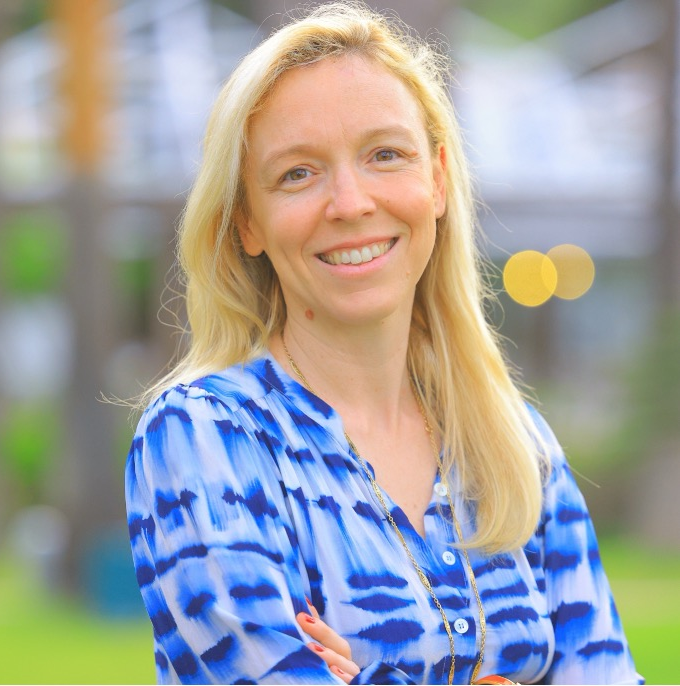
Stéphanie Nougaret
Radiology, Professor
Head, PINKcc Lab
The PINKCC Lab reimagines how we see cancer. We combine cutting-edge medical imaging, artificial intelligence, and digital twins to decode the invisible — revealing the biology behind every voxel. From ovarian to pancreatic and rectal cancers, our work bridges radiology, data science, and clinical innovation to build the future of precision oncology. Our vision: turn imaging into intelligence, and intelligence into impact.
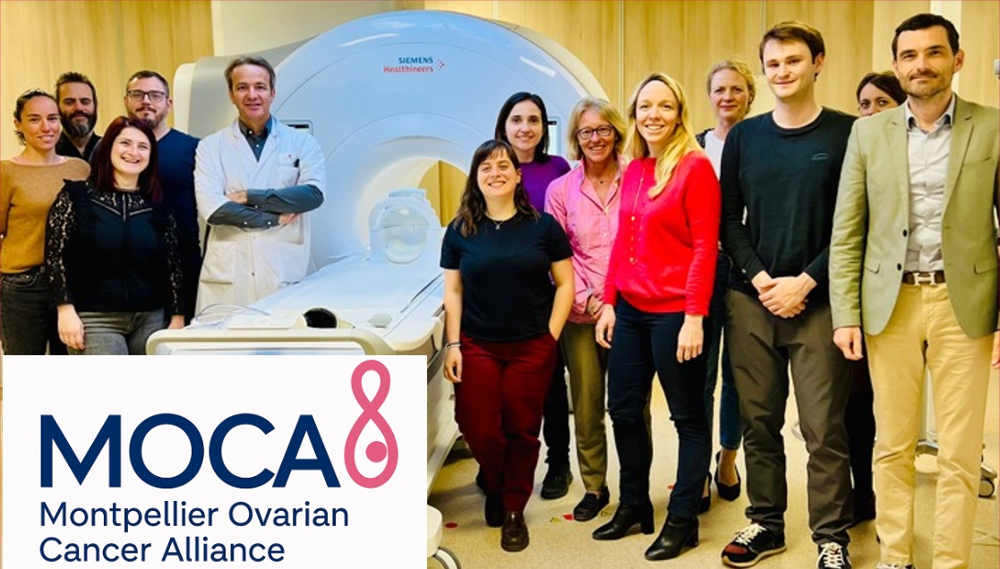
Papers
SIGAPS
Citations
Awards
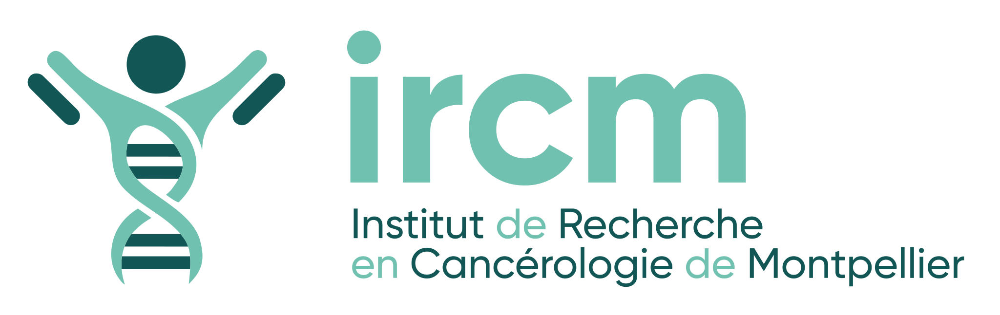
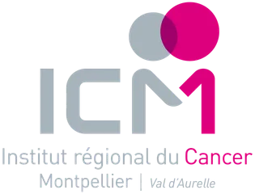
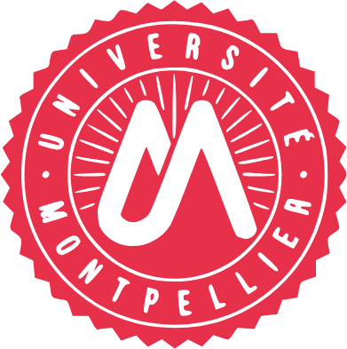
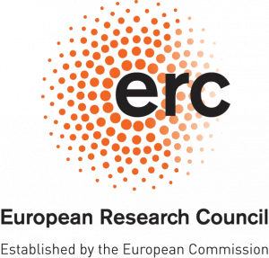
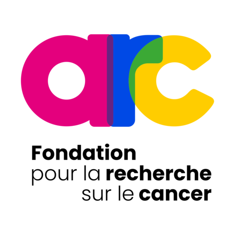
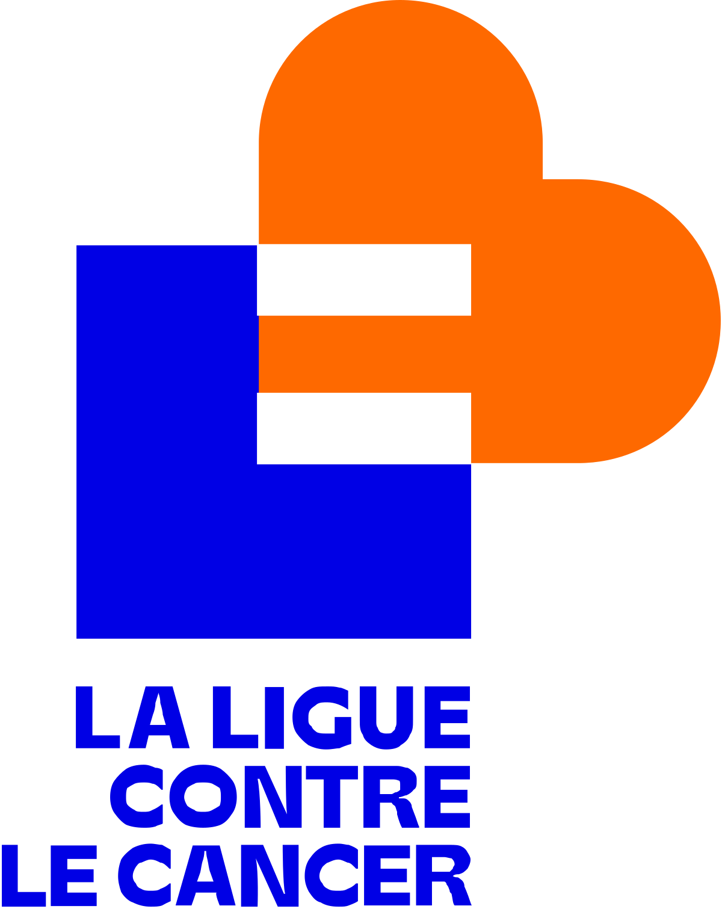
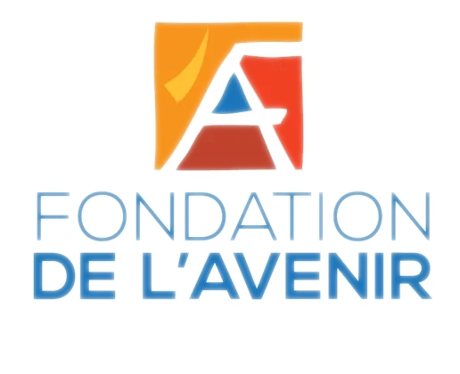
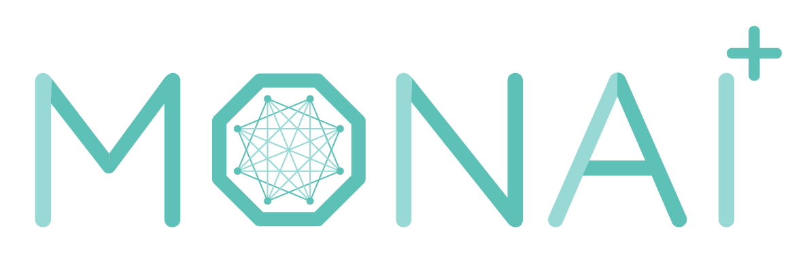
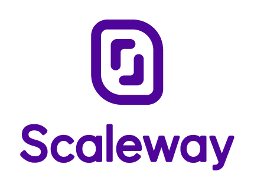
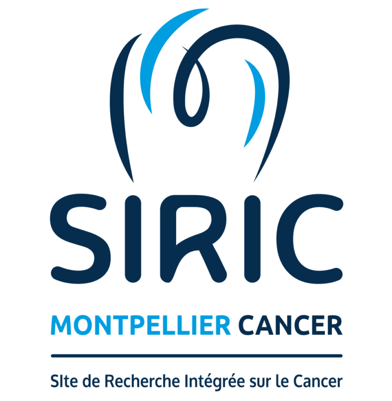
At the PINKCC Lab, our research pushes the boundaries of cross-sectional oncologic imaging to transform how cancer is detected, characterized, and treated. In partnership with Siemens Healthineers, we are developing next-generation MRI sequences that go beyond anatomy to capture tumor biology in vivo—including hypoxia and pH-sensitive CEST imaging (Chemical Exchange Saturation Transfer), which detects subtle proton exchanges between metabolites and water to map tissue acidity as a biomarker of aggressiveness. We also advance IVIM (Intravoxel Incoherent Motion)–derived parameters, separating true diffusion from microvascular perfusion, to non-invasively monitor treatment response and personalize therapy early in the course of care. Complementing this physiological imaging, our team designs AI-driven segmentation algorithms that precisely delineate tumors and peritoneal disease, providing surgeons with actionable 3D roadmaps to improve resectability, reduce morbidity, and ultimately elevate patient outcomes. Together, these innovations redefine medical imaging as a powerful decision-making tool—not just to see cancer, but to understand it.
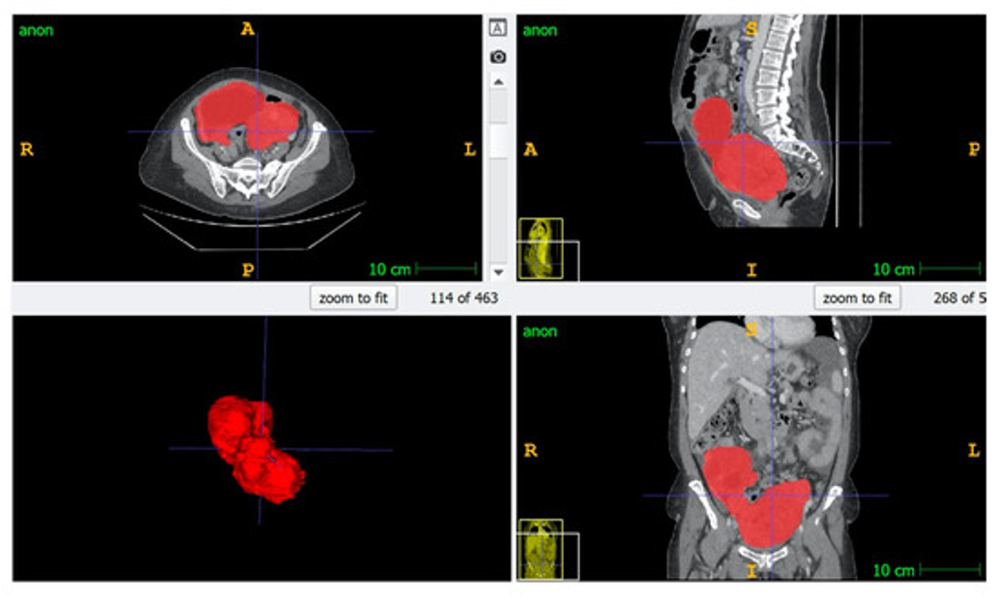
At the PINKCC Lab, we transform medical images into quantitative biomarkers that reveal tumor biology beyond what the human eye can see. Using high-quality cross-sectional imaging and precise manual and AI-based segmentation, we extract thousands of radiomic features describing tumor shape, texture, heterogeneity, and microenvironment. These data are then integrated with clinical, pathological, and genomic information to develop predictive models that can anticipate treatment response, assess resectability, and support truly personalized cancer care. Our radiomics program is applied at scale across ovarian, rectal, and peritoneal disease, with large curated cohorts and external validation to ensure robustness and clinical translation.
The primary mission of the PINKCC Lab is to transform the understanding and analysis of tumor habitats and phenotypes. By integrating advanced multi-omics approaches with extensive clinical in vivo imaging data, we aim to build a comprehensive depiction of cancer. A major innovation is the development of virtual cancer biopsies, designed to use MRI to decode complex histological and molecular characteristics traditionally obtained through invasive procedures.
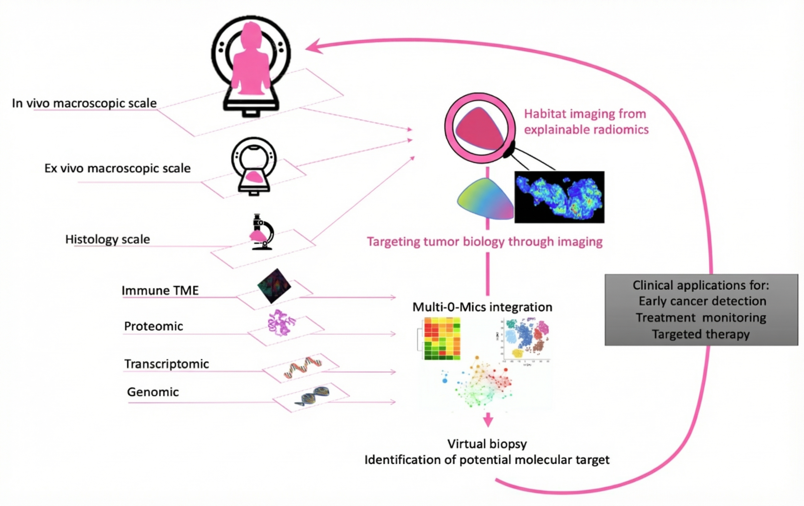
Two main projects support this vision: MROMICS (ERC-funded), focusing on virtual biopsies for high-grade serous ovarian cancer, and PANCOMICS (ARC Foundation-funded), applying the approach to pancreatic cancer.
Both ovarian and pancreatic cancers share a major challenge: an extremely poor prognosis, driven by late diagnosis and limited understanding of biological heterogeneity. Conventional biopsies sample only a small fraction of the tumor, whereas non-invasive imaging combined with radiomics offers a powerful alternative. Our goal is to correlate high-field preclinical MRI (9.4T) information with spatial transcriptomics to extend findings to clinical MRI and predict the tumor’s molecular and genetic status.
We also develop non-invasive biophysical MRI characterization techniques—hypoxia, pH, acidity, elasticity—combined with AI to build predictive models for virtual cancer modelling.
From automated segmentation to outcome prediction, our pipeline provides an end-to-end framework capable of capturing and interpreting tumor complexity.
These advanced virtual models aim to improve clinical decision-making, support personalized treatment, and enhance patient care.
Pathomics, the large-scale quantitative analysis of whole-slide histology images, represents the first layer of clinically mineable information. From a single H&E slide, pipelines can segment tumor and stromal compartments, quantify immune cell infiltration, and extract rich morphological features.
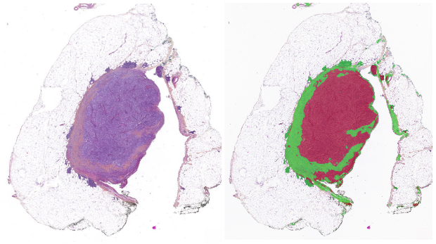
We use QuPath for segmentation, and algorithms such as StarDist and Cellpose for detailed cellular feature extraction. New foundation models—UNI, CONCH, Virchow, Prov-GigaPath—enable powerful learned representations for classification, biomarker prediction, and survival modelling.
In HGSOC, this approach is key to capturing hallmarks of HRD and WGD, major determinants of genomic instability. These defects promote micronuclei formation and activate the cGAS–STING pathway, driving innate inflammation. Image-based signatures reflecting nuclear atypia, micronuclei burden, mitotic abnormalities, and immune/stromal changes offer a scalable readout of these processes.
Pathomics and radiomics remain central, but they have limitations. To move beyond imaging, we integrate genomics and spatial transcriptomics, which maps gene expression directly onto tissue architecture. Microdissection followed by exome sequencing provides localized genetic profiles. By linking these multimodal layers, we aim to characterize clonal populations, quantify genome instability, and understand treatment response. Large-scale integration is essential given the explosion of available data.
Prognostic models are often unimodal. Integrating histological, genomic, radiological, and clinical data may improve prediction, but multimodal machine learning is highly prone to overfitting due to small datasets.
Key questions include: Do multimodal models outperform clinical-only models? Are they especially vulnerable to overfitting? Does transcriptomic data improve prediction, and which modality contributes the most?
Our goal is to provide practical guidelines for multimodal machine learning in oncology, with a focus on ovarian cancer, and systematically benchmark modelling strategies.
Updated on November 2025
Are you an AI expert? Whether you are a researcher, student, physician, or industry professional, we believe your expertise can help shape the future of oncology. We are thrilled to launch the PINKCC Challenge 2026 which will focus on pancreatic cancer, asking participants to develop algorithms for tumor detection and segmentation.
👉 Registration is open now
Register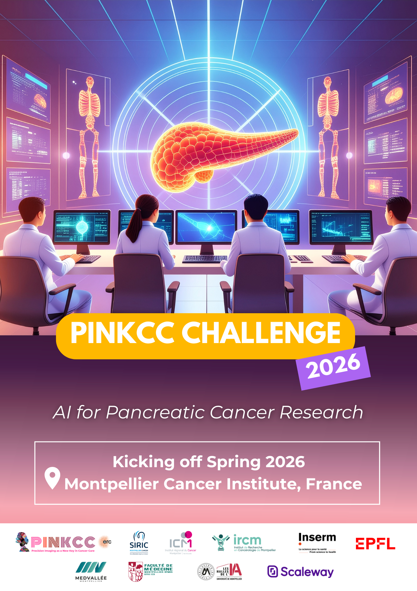
We are pleased to announce the incoming workshop on gyne imaging organized by the PINKCC Lab in September 2026. This workshop aims to bring together experts in the field of gynecologic imaging to discuss the latest advancements, challenges, and future directions in this rapidly evolving area.
Keep in touch on our Esur Planing to stay updated on the latest news and developments regarding the workshop!
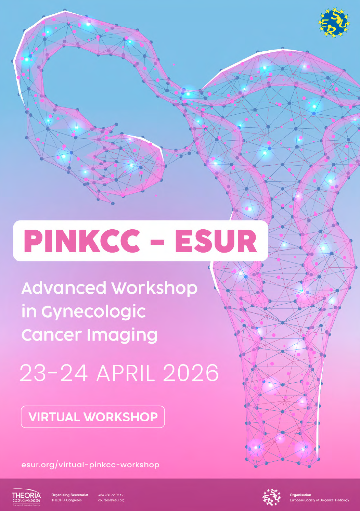
From April to June 2025, over 250 young AI talents participated in the challenge, developing algorithms based on anonymized clinical data. This phase was conducted in partnership with Professor Anne Laurent’s team—Vice-President Delegate for Open Science and Research Data at the University of Montpellier and Director of ISDM—who provided access to the Meso-LR platform.
Among these participants, 30% were international, coming from laboratories in Taiwan, Colombia, and Europe, as well as prestigious institutions such as École Nationale des Ponts et Chaussées, ENS, Mines d’Alès, Sorbonne University, University of Montpellier, EPITA, Epitech, and hospitals including the University Hospitals of Lyon, Clermont-Ferrand, Saint-Étienne, Montpellier, and APHP via SIRIC Curamus.
Following this initial “pre-qualification” phase, the final phase was launched in partnership with Scaleway, the European cloud provider and subsidiary of the Iliad group. Overall, participants developed and trained their models on more than 300 ovarian CT scans, collected, anonymized, structured, and annotated by the teams at the Montpellier Cancer Institute.
After this second stage, 70 finalists were selected to present their algorithms in Montpellier before an international jury during the grand final held on June 13, 2025, at the Montpellier Cancer Institute.
Read more →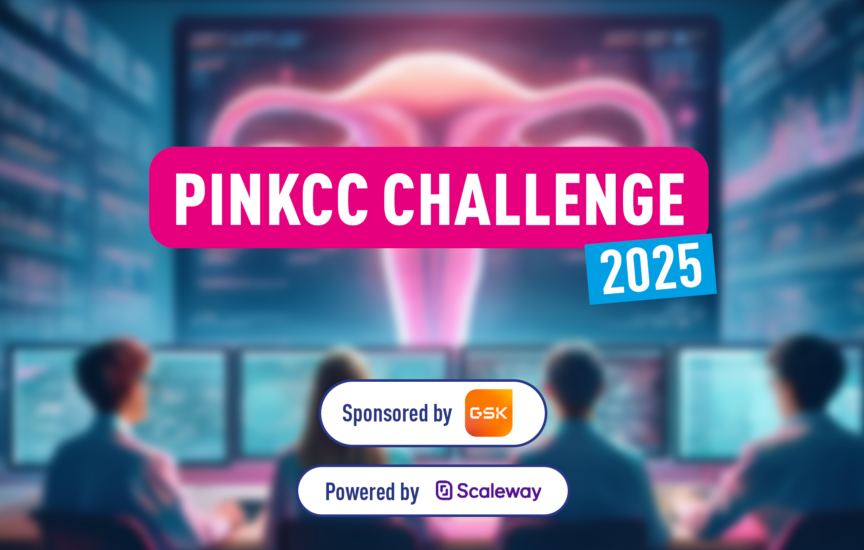
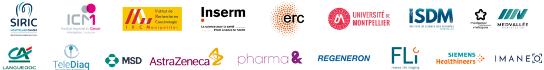
Updated on February 2026
Our team brings together researchers and engineers at the crossroads of genomics, medical imaging, and artificial intelligence — united by a shared goal: turning complex biological data into meaningful insights for precision medicine.

Radiology, Professor
Head, PINKcc Lab
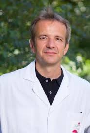
Surgeon, Professor
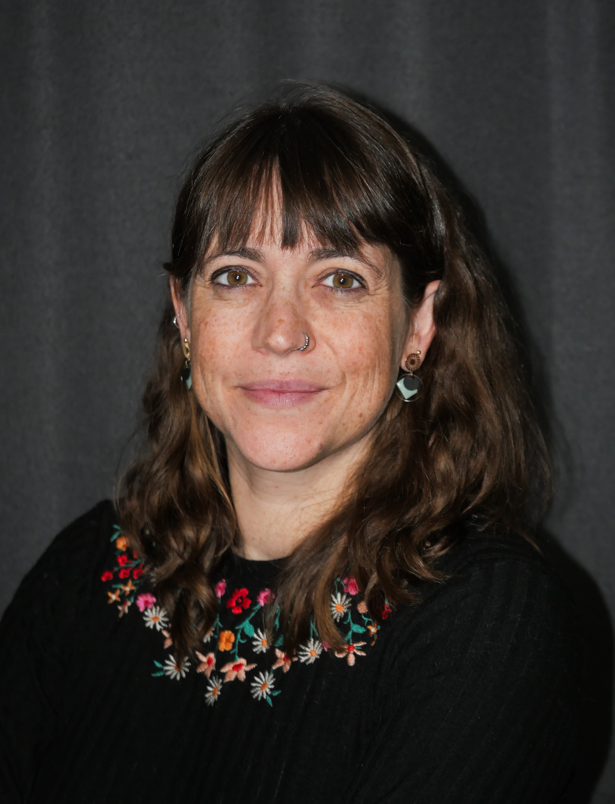
CR ICM
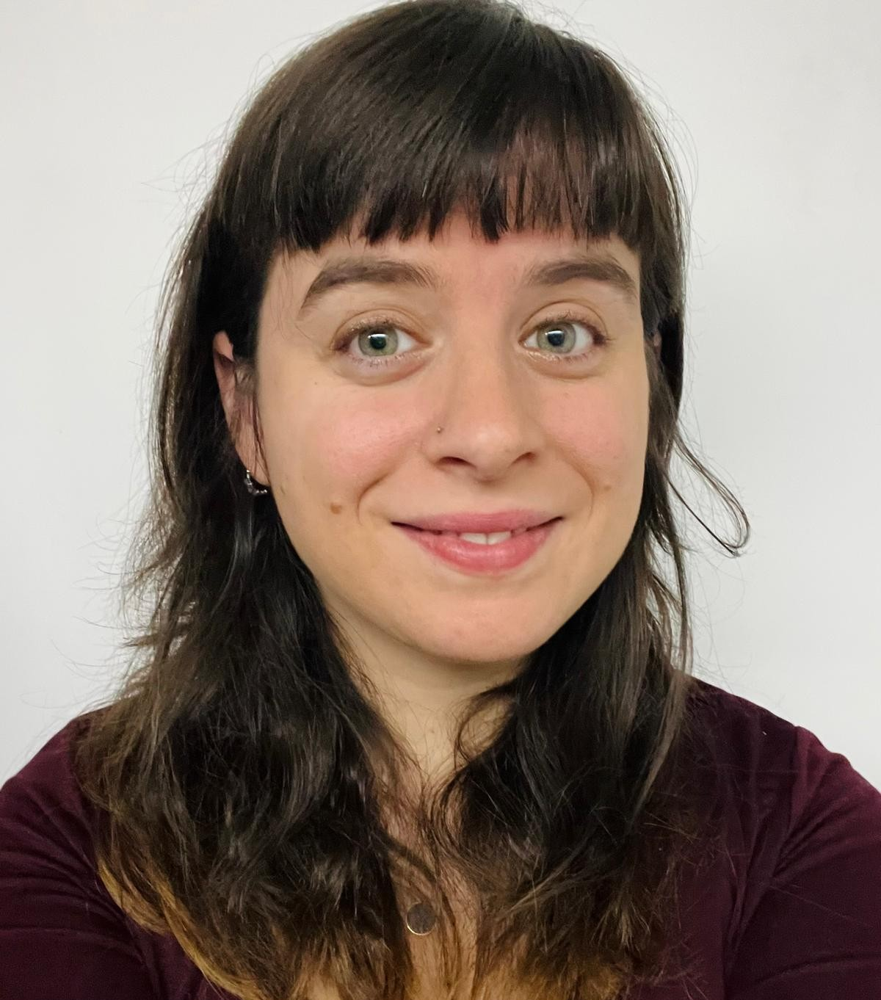
Post doc
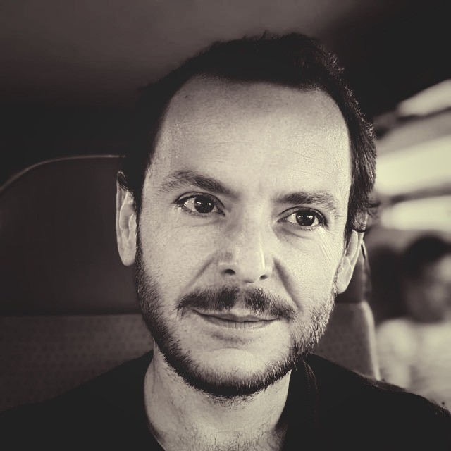
Post doc
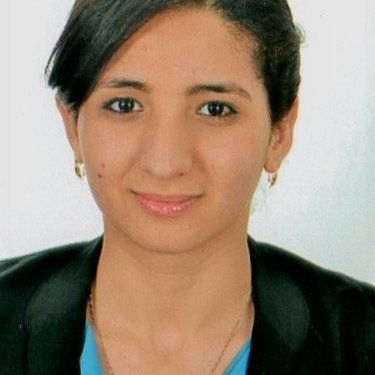
Post doc
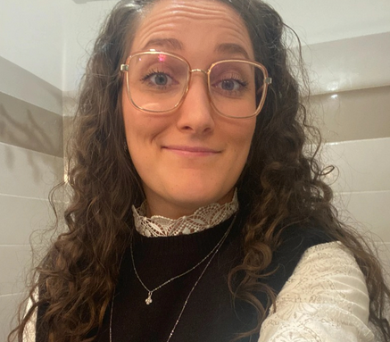
Post doc
PH, ICM
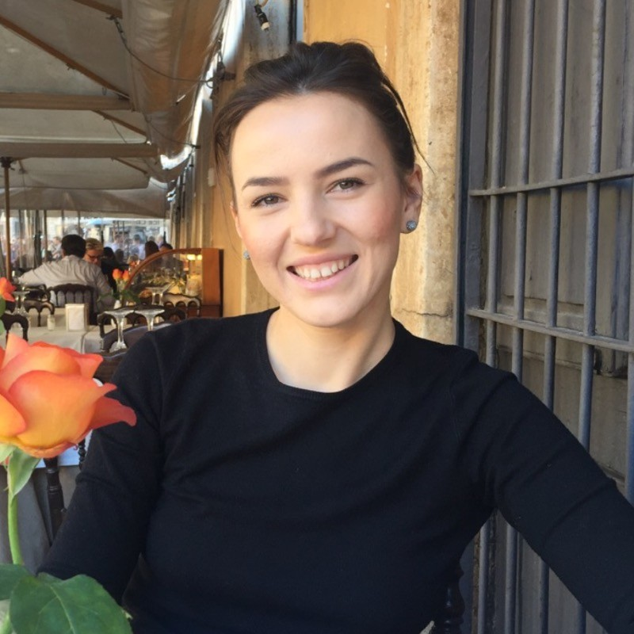
Research Fellow, Romania
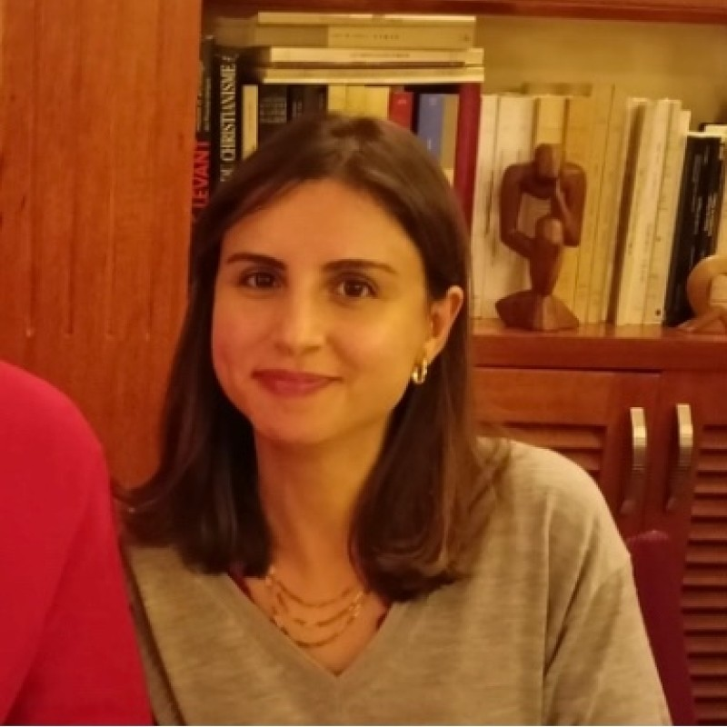
Research Fellow, Lebanon
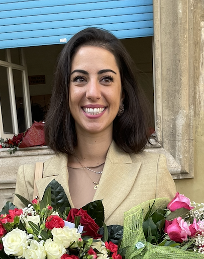
Research Fellow, Italy
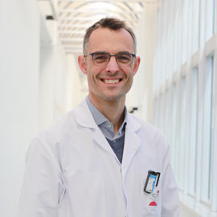
PH, ICM
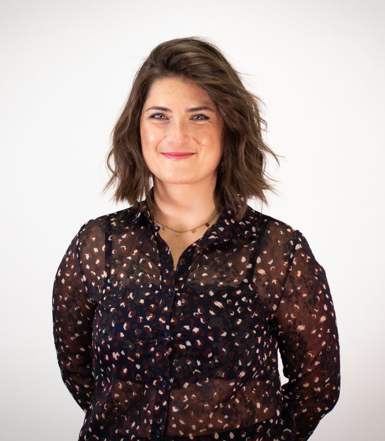
AI Engineer
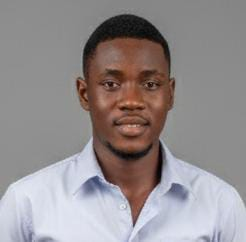
AI Engineer
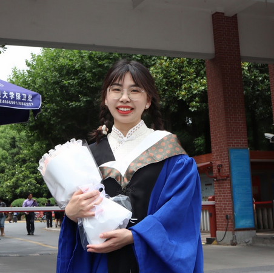
PhD student
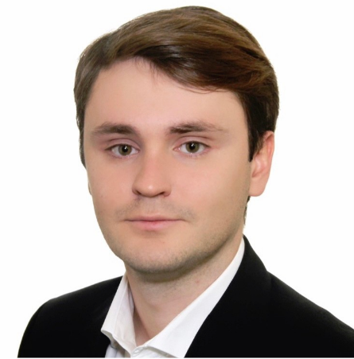
PhD student
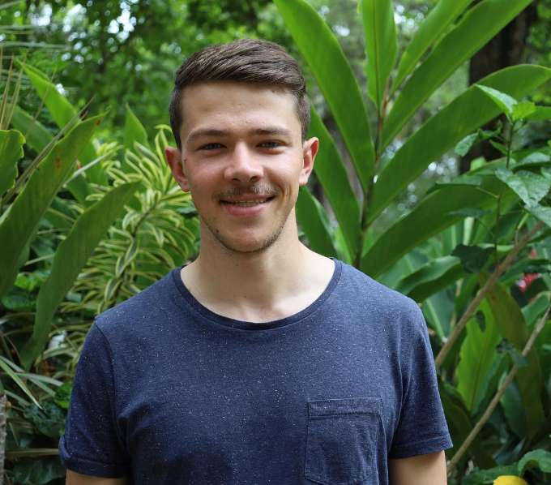
PhD student
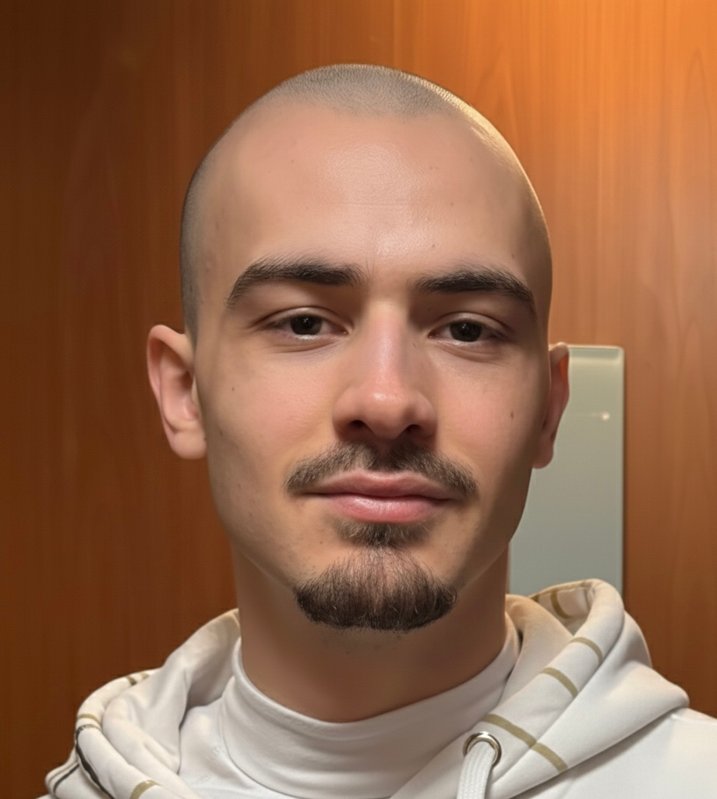
PhD student
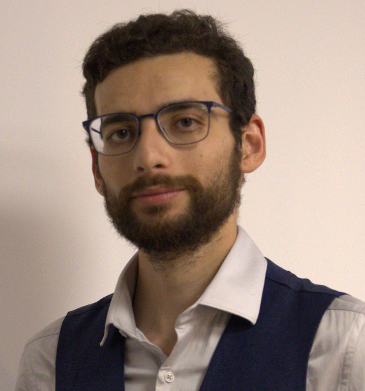
PhD student
Feel free to reach out to us with any questions or inquiries. We'd love to hear from you!